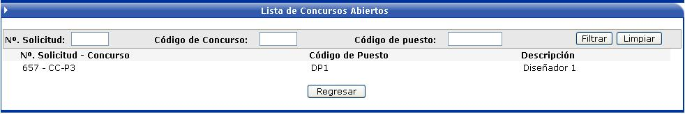
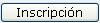
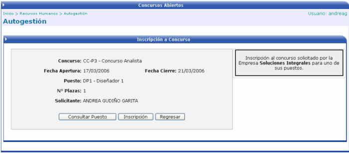
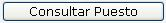
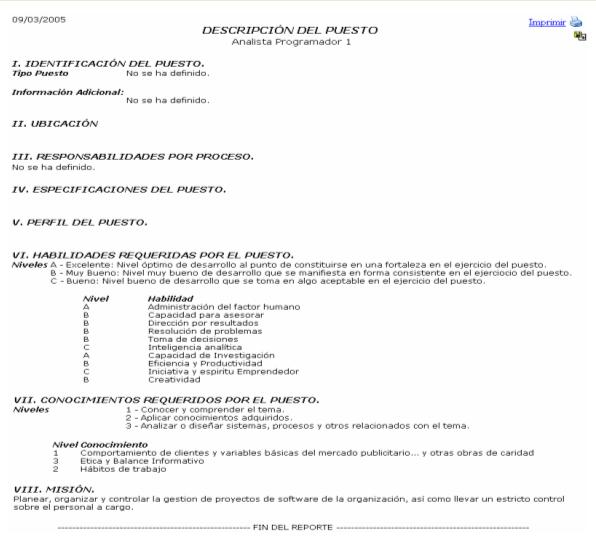

En esta opción se listan todos los concursos que están aplicados y vigentes a la fecha actual. Para ver la información del concurso se debe de hacer click sobre el registro deseado:

Una vez que se ha seccionado el concurso, se muestra una pantalla como la siguiente donde el usuario podrá ver la información referente a él y además podrá inscribirse, si así lo desea, solamente presionando el botón

:

Además si quiere ver las características del puesto, puede ver un reporte del mismo, con tan solo presionar el botón

:
